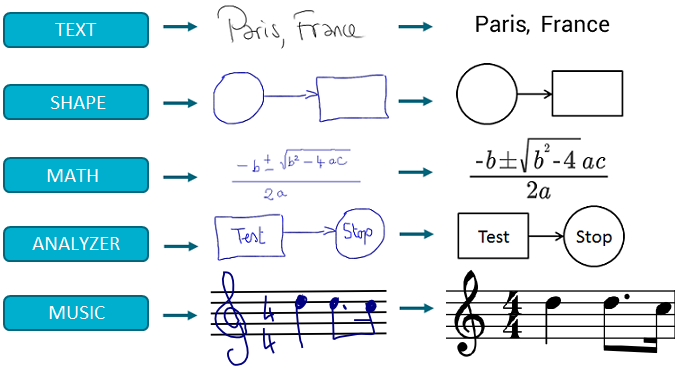

MyScriptJS, through MyScript Cloud, can recognize handwritten text, shapes, mathematical expressions and music.

The scratch-out gesture is supported, meaning that the user can erase a character, a shape, a symbol, etc. by scratching it out.
To see a working example of MyScript JS, visit our WebDemo site and try out our handwriting recognition in a variety of situations.